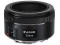

器材库 > 35mm画幅AF定焦镜头 > EF 50/1.8 STM

详细规格
镜头类型
标准镜头
发布日期
2015-05-11
厂家推荐价格
19,500.00 （日元）
焦距
50mm
最大光圈
f/1.8
最小光圈
f/22
镜头结构
6片/5组
光圈叶片
7片
最近对焦距离
35cm
最大放大倍率
0.21倍
驱动马达
STM
滤镜口径
49mm
镜头卡口
Canon EF
防抖
否
颜色
黑色
尺寸
约Φ69.2×39.3mm
重量
160g
金点子2015-10-10 22:414.5 分
操作性 4.00耐用性 4.50性价比 5.00解像力 4.50色彩还原 4.50机械结构 4.50
十五的萝柚2015-08-28 16:274.25 分
操作性 4.00耐用性 4.00性价比 5.00解像力 4.50色彩还原 4.00机械结构 4.00
picture96862015-08-19 08:044.17 分
操作性 4.50耐用性 4.00性价比 5.00解像力 4.00色彩还原 3.50机械结构 4.00
十五的萝柚2015-05-30 17:494.42 分
操作性 4.50耐用性 4.00性价比 5.00解像力 4.50色彩还原 4.50机械结构 4.00
ggllj1082015-05-29 10:484.08 分
操作性 4.00耐用性 4.00性价比 4.50解像力 4.00色彩还原 4.00机械结构 4.00
wingszero2015-05-28 10:335 分
操作性 5.00耐用性 5.00性价比 5.00解像力 5.00色彩还原 5.00机械结构 5.00
zhljgh2015-05-25 09:494.67 分
操作性 5.00耐用性 4.00性价比 5.00解像力 5.00色彩还原 5.00机械结构 4.00
elliotliu2015-05-21 13:354.92 分
操作性 5.00耐用性 4.50性价比 5.00解像力 5.00色彩还原 5.00机械结构 5.00
cybertron2015-05-13 17:474.17 分
操作性 4.00耐用性 4.00性价比 4.50解像力 4.50色彩还原 4.00机械结构 4.00
wuzhouxian2015-05-13 13:47
产品图 / 样片
评测 / 相关文章
- “铁痰盂”驾临 佳能EF50/1.8 STM评测 （存档）
- ［试用］佳能EF 50/1.8STM实拍样张 （存档）
- ［试用］人气“铁痰盂”表现如何？EF50/1.8 STM评测 （存档）
- ［资讯］佳能EF 50/1.8 STM官方样片欣赏 （存档）
- ［资讯］经典袭来 佳能EF 50/1.8 STM新登场 （存档）